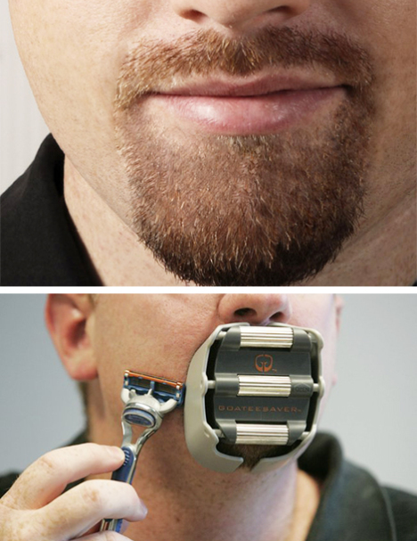

A shaving template designed to shape and form your goatee
Saves time by allowing precise shaving of your desired gooatee shape every day
Creates and maintains a perfectly shaped goatee
Eliminates crooked goatees and those occasional shaving mishaps

Important Info
Indications
For use when shaving around a goatee in order to get the goatee even on both sides and to get the ideal shape every day.
Adjust GoateeSaver to desired width by turning the rollers. Place GoateeSaver mouthpiece in mouth and bite down to hold in place. Apply preferred shaving cream. Shave around the template.